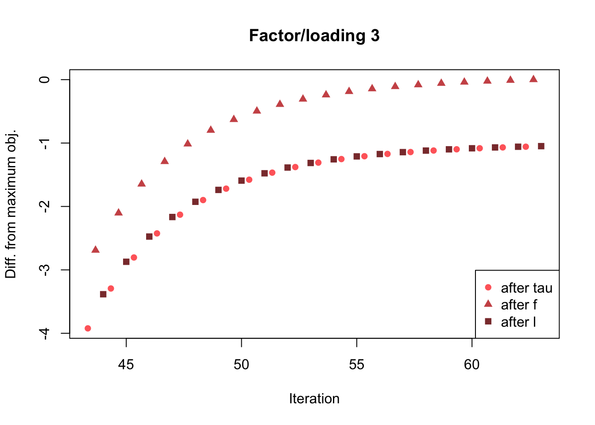
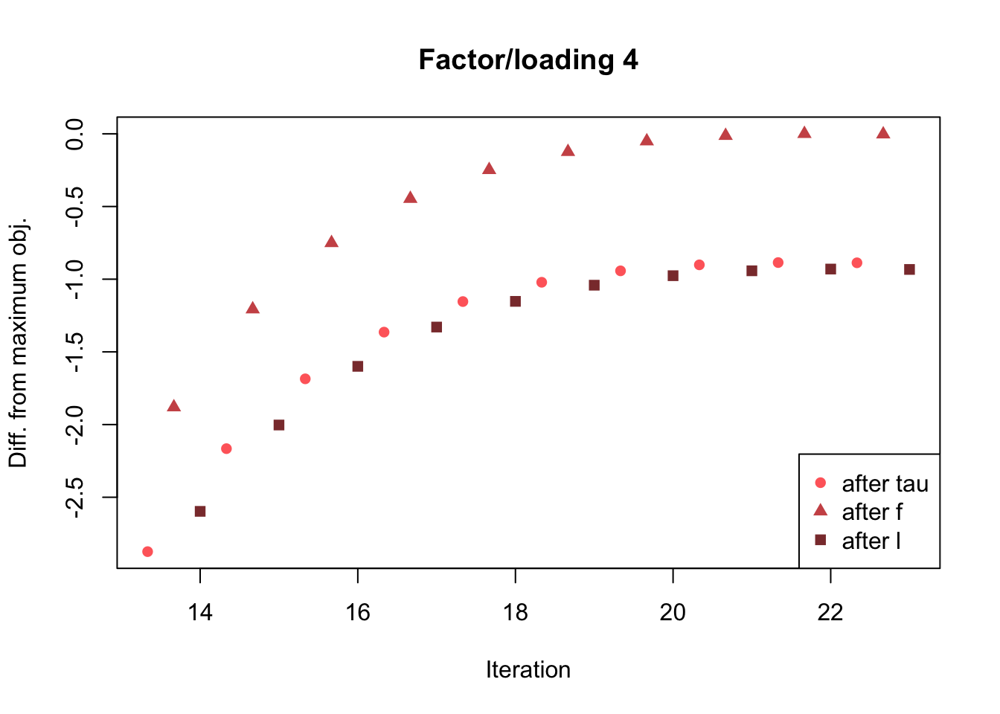
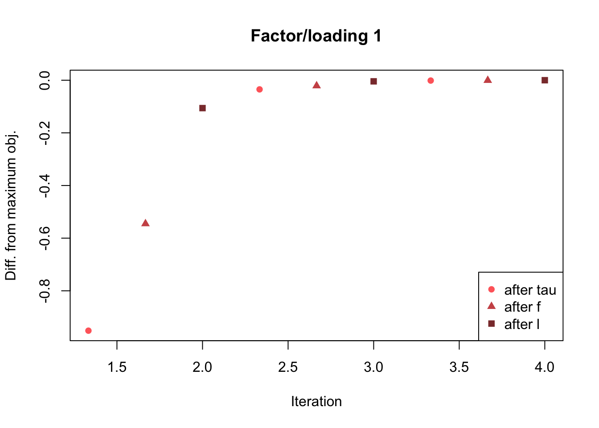
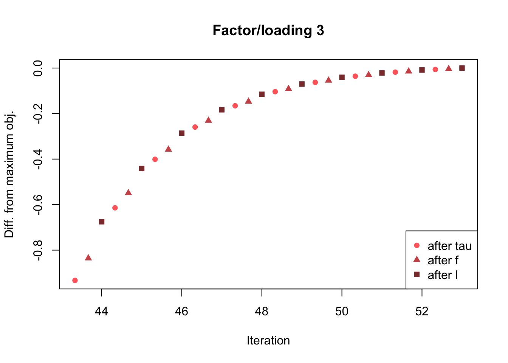

Last updated: 2018-07-20
workflowr checks: (Click a bullet for more information) ✔ R Markdown file: up-to-date
Great! Since the R Markdown file has been committed to the Git repository, you know the exact version of the code that produced these results.
✔ Environment: empty
Great job! The global environment was empty. Objects defined in the global environment can affect the analysis in your R Markdown file in unknown ways. For reproduciblity it’s best to always run the code in an empty environment.
✔ Seed:
set.seed(20180714)
The command set.seed(20180714) was run prior to running the code in the R Markdown file. Setting a seed ensures that any results that rely on randomness, e.g. subsampling or permutations, are reproducible.
✔ Session information: recorded
Great job! Recording the operating system, R version, and package versions is critical for reproducibility.
✔ Repository version: 2761284
wflow_publish or wflow_git_commit). workflowr only checks the R Markdown file, but you know if there are other scripts or data files that it depends on. Below is the status of the Git repository when the results were generated:
Ignored files:
Ignored: .DS_Store
Ignored: .Rhistory
Ignored: .Rproj.user/
Ignored: docs/.DS_Store
Ignored: docs/figure/.DS_Store
Unstaged changes:
Modified: analysis/flash_em.Rmd
Modified: analysis/index.Rmd
Modified: analysis/obj_notes.Rmd
| File | Version | Author | Date | Message |
|---|---|---|---|---|
| Rmd | 2761284 | Jason Willwerscheid | 2018-07-20 | wflow_publish(c(“analysis/objective3.Rmd”, |
| html | 1c31f1b | Jason Willwerscheid | 2018-07-20 | Build site. |
| Rmd | d1a6b4f | Jason Willwerscheid | 2018-07-20 | wflow_publish(c(“analysis/objective.Rmd”, |
| html | 7db12a1 | Jason Willwerscheid | 2018-07-16 | Build site. |
| html | 873da40 | Jason Willwerscheid | 2018-07-16 | Build site. |
| Rmd | b0dbc3a | Jason Willwerscheid | 2018-07-16 | add Rdata for variables before ‘bad’ update |
| html | 019bf35 | Jason Willwerscheid | 2018-07-15 | Build site. |
| Rmd | a19a4a0 | Jason Willwerscheid | 2018-07-15 | wflow_publish(“analysis/objective2.Rmd”) |
| Rmd | 67360f4 | Jason Willwerscheid | 2018-07-15 | manual objective2 commit |
| html | 67360f4 | Jason Willwerscheid | 2018-07-15 | manual objective2 commit |
Here I use ebnm_ash to see if I obtain similar decreases in the objective function as were obtained in the previous investigation.
I use the same dataset as in the previous investigation.
# devtools::install_github("stephenslab/flashr", ref="trackObj")
devtools::load_all("/Users/willwerscheid/GitHub/flashr")Loading flashr# devtools::install_github("stephenslab/ebnm")
devtools::load_all("/Users/willwerscheid/GitHub/ebnm")Loading ebnmgtex <- readRDS(gzcon(url("https://github.com/stephenslab/gtexresults/blob/master/data/MatrixEQTLSumStats.Portable.Z.rds?raw=TRUE")))
strong <- gtex$strong.zI fit four factors greedily using both ebnm_pn and ebnm_ash.
pn_res <- flash_add_greedy(strong, Kmax=4, verbose=FALSE)fitting factor/loading 1fitting factor/loading 2fitting factor/loading 3fitting factor/loading 4ash_res <- flash_add_greedy(strong, Kmax=4, ebnm_fn = "ebnm_ash",
verbose=FALSE)fitting factor/loading 1fitting factor/loading 2fitting factor/loading 3fitting factor/loading 4plot_obj <- function(res, k, niters) {
obj_data <- as.vector(rbind(res$obj[[k]]$after_tau,
res$obj[[k]]$after_f,
res$obj[[k]]$after_l))
max_obj <- max(obj_data)
obj_data <- obj_data - max_obj
iter <- 1:length(obj_data) / 3
if (length(obj_data) > niters*3) {
idx <- (length(obj_data) - niters*3 + 1):length(obj_data)
obj_data <- obj_data[idx]
iter <- iter[idx]
}
plt_xlab <- "Iteration"
plt_ylab <- "Diff. from maximum obj."
plt_colors <- c("indianred1", "indianred3", "indianred4")
plt_pch <- c(16, 17, 15)
main <- paste("Factor/loading", k)
plot(iter, obj_data, col=plt_colors, pch=plt_pch,
xlab=plt_xlab, ylab=plt_ylab, main=main)
legend("bottomright", c("after tau", "after f", "after l"),
col=plt_colors, pch=plt_pch)
}The problem discussed in the previous investigation occurs every time.
plot_obj(pn_res, 1, niters=3)| Version | Author | Date |
|---|---|---|
| 1c31f1b | Jason Willwerscheid | 2018-07-20 |
| 873da40 | Jason Willwerscheid | 2018-07-16 |
| 019bf35 | Jason Willwerscheid | 2018-07-15 |
plot_obj(pn_res, 2, niters=5)| Version | Author | Date |
|---|---|---|
| 1c31f1b | Jason Willwerscheid | 2018-07-20 |
| 873da40 | Jason Willwerscheid | 2018-07-16 |
| 019bf35 | Jason Willwerscheid | 2018-07-15 |
plot_obj(pn_res, 3, niters=20)
| Version | Author | Date |
|---|---|---|
| 1c31f1b | Jason Willwerscheid | 2018-07-20 |
| 873da40 | Jason Willwerscheid | 2018-07-16 |
| 019bf35 | Jason Willwerscheid | 2018-07-15 |
plot_obj(pn_res, 4, niters=10)
But no obvious problems occur when using ebnm_ash.
plot_obj(ash_res, 1, niters=3)
| Version | Author | Date |
|---|---|---|
| 1c31f1b | Jason Willwerscheid | 2018-07-20 |
| 019bf35 | Jason Willwerscheid | 2018-07-15 |
plot_obj(ash_res, 2, niters=5)| Version | Author | Date |
|---|---|---|
| 1c31f1b | Jason Willwerscheid | 2018-07-20 |
| 019bf35 | Jason Willwerscheid | 2018-07-15 |
plot_obj(ash_res, 3, niters=10)
| Version | Author | Date |
|---|---|---|
| 1c31f1b | Jason Willwerscheid | 2018-07-20 |
| 019bf35 | Jason Willwerscheid | 2018-07-15 |
plot_obj(ash_res, 4, niters=20)When using ebnm_ash, the objective does not suffer from the same erratic behavior as when using ebnm_pn. Is there a weird bug somewhere in the computation of the likelihood function for ebnm_pn?
sessionInfo()R version 3.4.3 (2017-11-30)
Platform: x86_64-apple-darwin15.6.0 (64-bit)
Running under: macOS Sierra 10.12.6
Matrix products: default
BLAS: /Library/Frameworks/R.framework/Versions/3.4/Resources/lib/libRblas.0.dylib
LAPACK: /Library/Frameworks/R.framework/Versions/3.4/Resources/lib/libRlapack.dylib
locale:
[1] en_US.UTF-8/en_US.UTF-8/en_US.UTF-8/C/en_US.UTF-8/en_US.UTF-8
attached base packages:
[1] stats graphics grDevices utils datasets methods base
other attached packages:
[1] ebnm_0.1-12 flashr_0.5-12
loaded via a namespace (and not attached):
[1] Rcpp_0.12.17 pillar_1.2.1 plyr_1.8.4
[4] compiler_3.4.3 git2r_0.21.0 workflowr_1.0.1
[7] R.methodsS3_1.7.1 R.utils_2.6.0 iterators_1.0.9
[10] tools_3.4.3 testthat_2.0.0 digest_0.6.15
[13] tibble_1.4.2 evaluate_0.10.1 memoise_1.1.0
[16] gtable_0.2.0 lattice_0.20-35 rlang_0.2.0
[19] Matrix_1.2-12 foreach_1.4.4 commonmark_1.4
[22] yaml_2.1.17 parallel_3.4.3 withr_2.1.1.9000
[25] stringr_1.3.0 roxygen2_6.0.1.9000 xml2_1.2.0
[28] knitr_1.20 REBayes_1.2 devtools_1.13.4
[31] rprojroot_1.3-2 grid_3.4.3 R6_2.2.2
[34] rmarkdown_1.8 ggplot2_2.2.1 ashr_2.2-10
[37] magrittr_1.5 whisker_0.3-2 backports_1.1.2
[40] scales_0.5.0 codetools_0.2-15 htmltools_0.3.6
[43] MASS_7.3-48 assertthat_0.2.0 softImpute_1.4
[46] colorspace_1.3-2 stringi_1.1.6 Rmosek_7.1.3
[49] lazyeval_0.2.1 munsell_0.4.3 doParallel_1.0.11
[52] pscl_1.5.2 truncnorm_1.0-8 SQUAREM_2017.10-1
[55] R.oo_1.21.0 This reproducible R Markdown analysis was created with workflowr 1.0.1